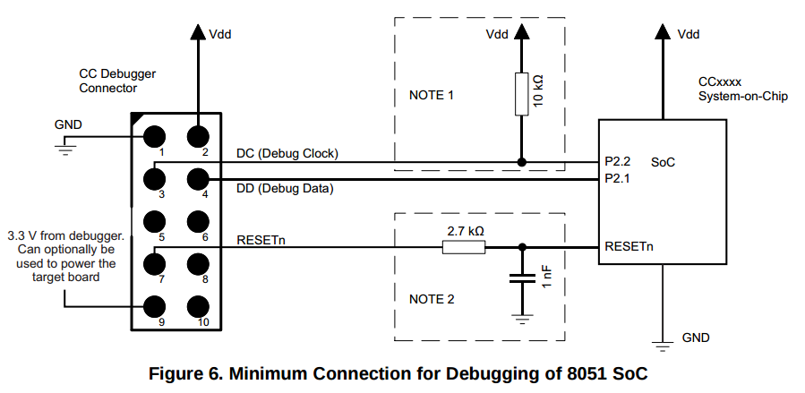
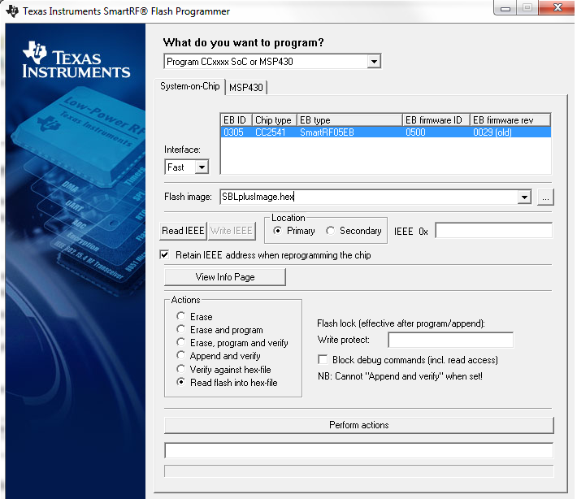

Texas Instruments CC254x¶
Summary¶
| Category | Feature | Present |
|---|---|---|
| Debugging | JTAG port | No |
| SWD port | No | |
| Custom debug port | Yes | |
| Protections | Read-out protection | Yes |
| Known bypass | No |
Features¶
The CC254x SoCs are 2.4GHz Bluetooth and Proprietary RF protocol System-on-Chips. They are widely used in various products that require efficient RF communications (Nordic ESB/SB, Bluetooth Low Energy, or other proprietary protocols).
It includes:
- 128 or 256 Kbytes of flash memory (depending on the version)
- 8 Kbytes of RAM with retention
- AES security coprocessor
- 2 USART ports
- I2C interface
Firmware extraction¶
The only way to extract a firmware from a CC2541 is to use Texas Instruments CC Debugger. This debugger must be connected to the hardware debug pointerType in order to access the Flash and extract its content. The software used is for Windows only, but may also work in a virtual machine on a Linux host.
Connecting the CC debugger to CC254x¶
The minimal viable connection for the CC debugger to work with the CC254x SoC is the following:
Note
the resistors and capacitors added above are optional
On a Windows machine, start the Flash Programmer application as administrator and connect to the target SoC. The Target SoC MUST be visible in the System-on-Chip area.
{kind=link}
- Select a target directory and file name for your flash dump
- In the Actions frame, select Read flash into hex-file
- Click the Perform Actions button, the dump should start
Converting the hex file into a binary file¶
The best way is to use Linux’ objcopy utility:
$ objcopy -I ihex -O binary <input hex filename> <output raw binary filename>
Memory Protection¶
Texas Instruments CC254x SoCs may be protected against firmware extraction even with the debugging interface enabled. The SoC uses a 16-byte long structure to define many lock bits, including the DBGLOCK (bit 127). If this bit is set to 0, then accessing the flash memory through debugging is forbidden, and the SoC has to be erased to reset this bit, causing the flash memory to be erased.
A READ_STATUS command issued on the debugging interface provides information about the state of this lock bit (bit 2 of the READ_STATUS response).